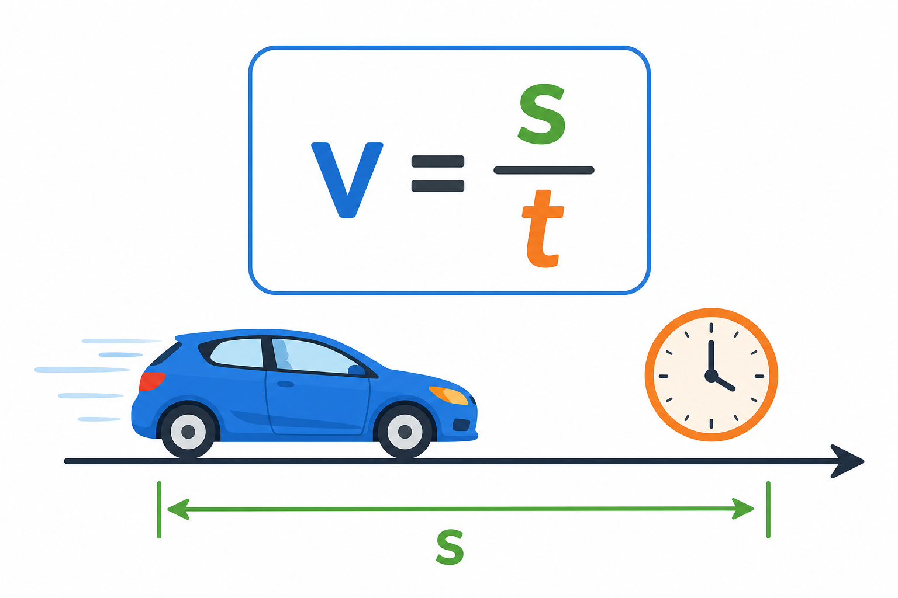

1
skala mapy
масштаб карти

📘 Co to jest? Що це?
Stosunek długości na mapie do długości w rzeczywistości.
Відношення довжини на карті до довжини в дійсності.
⭐ Zapamiętaj Запам'ятай
1 : n
Відношення довжини на карті до довжини в дійсності
⚠ Nie pomyl Не плутай
- 1 : nmapa → teren
- prędkośćmnożysz przez n
✅ Przykłady Приклади
- skala 1:50 000
- 1 cm → 500 m
- 2 cm na mapie → ?
- odczytaj skalę z mapy
- 1:100 000 → 1 cm = 1 km